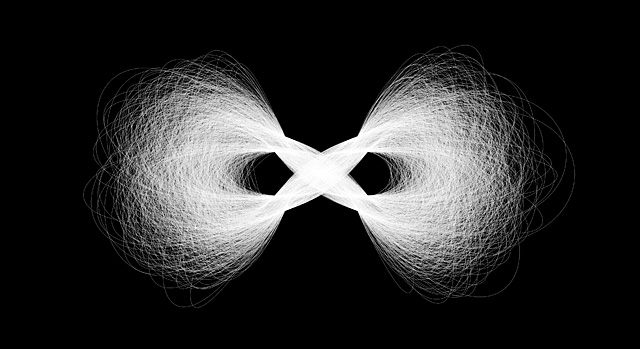

Week 9
Questions
How can we design less quantity with more quality in a culture that demands cheap content?
Thoughts + Observations
There is much to do.
Consumed content: Readings, videos, podcasts
Adobe MAX
Images + Methods

John Maeda